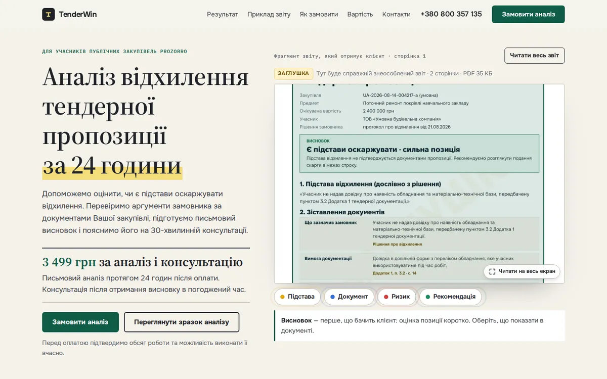
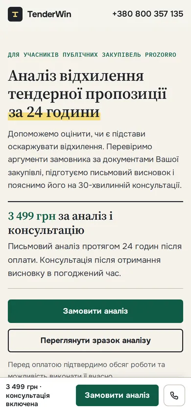
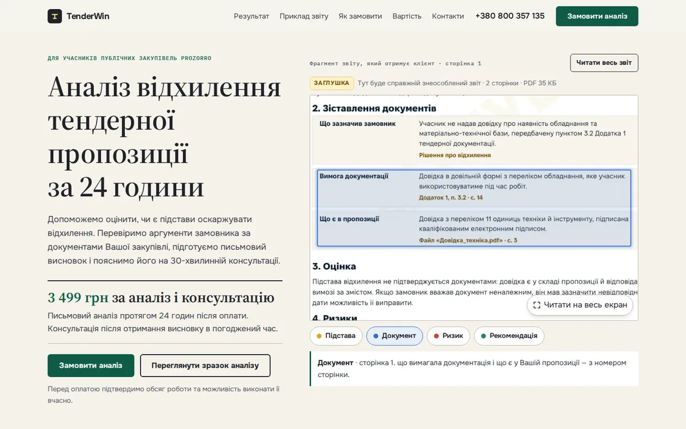

Обрано «Документ»: переглядач наводить і обводить відповідний фрагмент. PDF не змінюється.
Відкрите досьє
Якість аналізу видно ще до звернення: у першому екрані поруч із пропозицією — читабельний фрагмент справжнього звіту.
Фірмова взаємодія
Пояснення «Підстава», «Документ», «Ризик», «Рекомендація» наводять і обводять реальний фрагмент, поруч з’являється цитата з документа. Нижче — повний перегляд з легендою й мініатюрами сторінок.
Що нового
- Чорнетка справжнього аналізу в переглядачі (у приватній версії)
- Рух: смуга прочитання, маркер на «за 24 години», документ підіймається, після появи обводиться висновок, пояснення «спалахують», цифри прикладу рахуються, лінії розділів прокреслюються, відблиск ціни
Порядок
пропозиція → справжній звіт → що перевіряється → чотири кроки → ціна й межі → FAQ → форма → контакти
Кольори й шрифти
Source Serif 4 (заголовки), Onest (текст), IBM Plex Mono (примітки)
Ризик: дрібний текст і перевантаження документом. Що зроблено: фрагмент крупно, а не вся сторінка; короткі пояснення поза документом; на телефоні ціна й кнопка йдуть перед звітом.